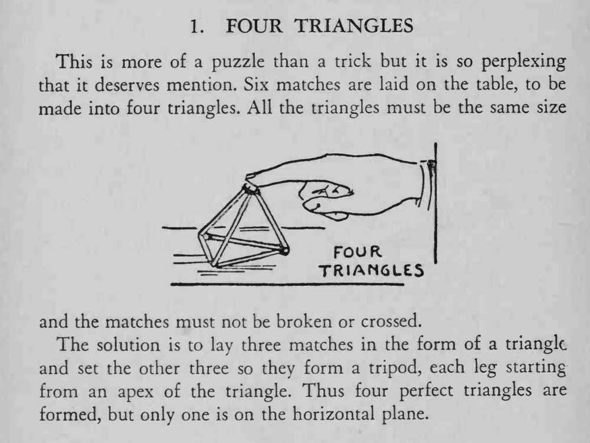

桌上六根火柴，要求摆出四个大小相同、不能折断也不能交叉的三角形。
四个三角形不全在桌面上，有一个是立起来的。

This is more of a puzzle than a trick but it is so perplexing that it deserves mention. Six matches are laid on the table, to be made into four triangles. All the triangles must be the same size and the matches must not be broken or crossed. The solution is to lay three matches in the form of a triangle and set the other three so they form a tripod, each leg starting from an apex of the triangle. Thus four perfect triangles are formed, but only one is on the horizontal plane.